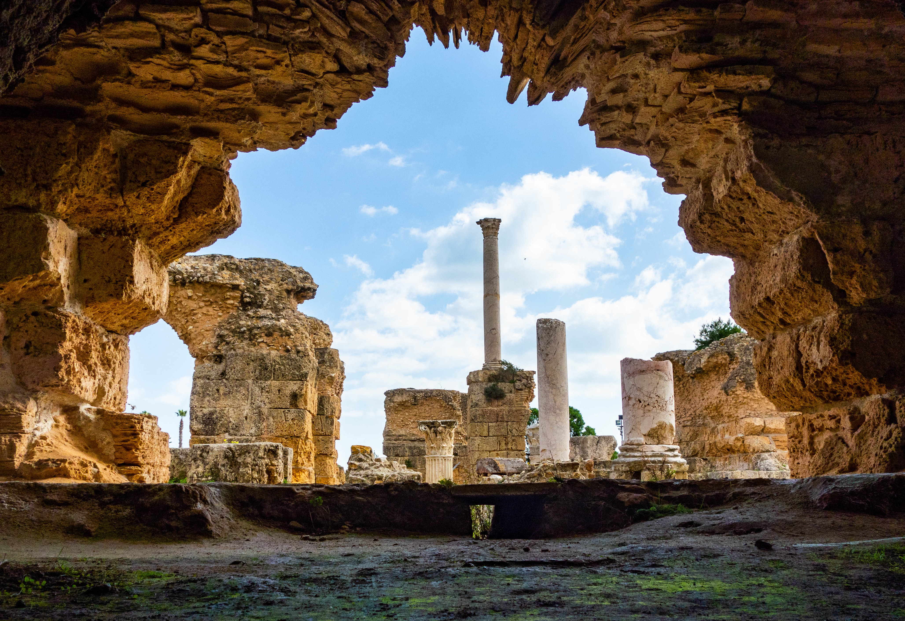
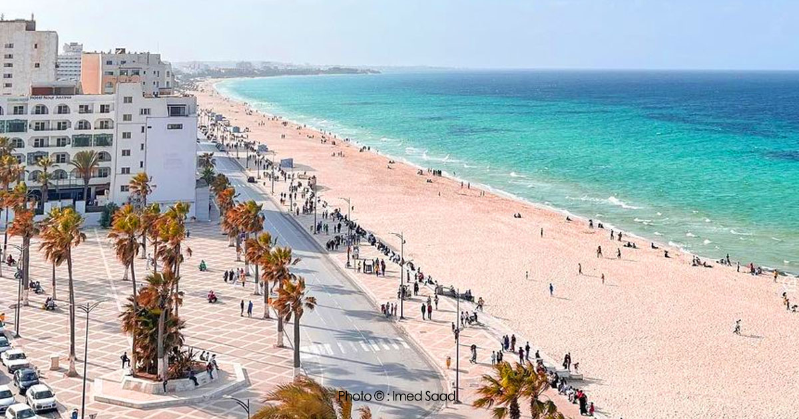
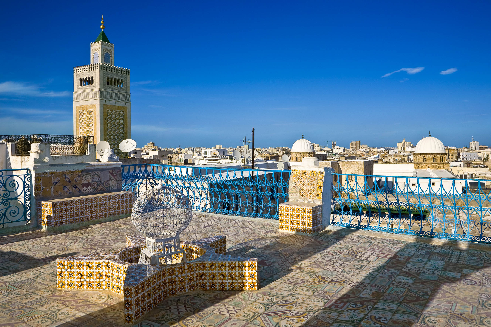
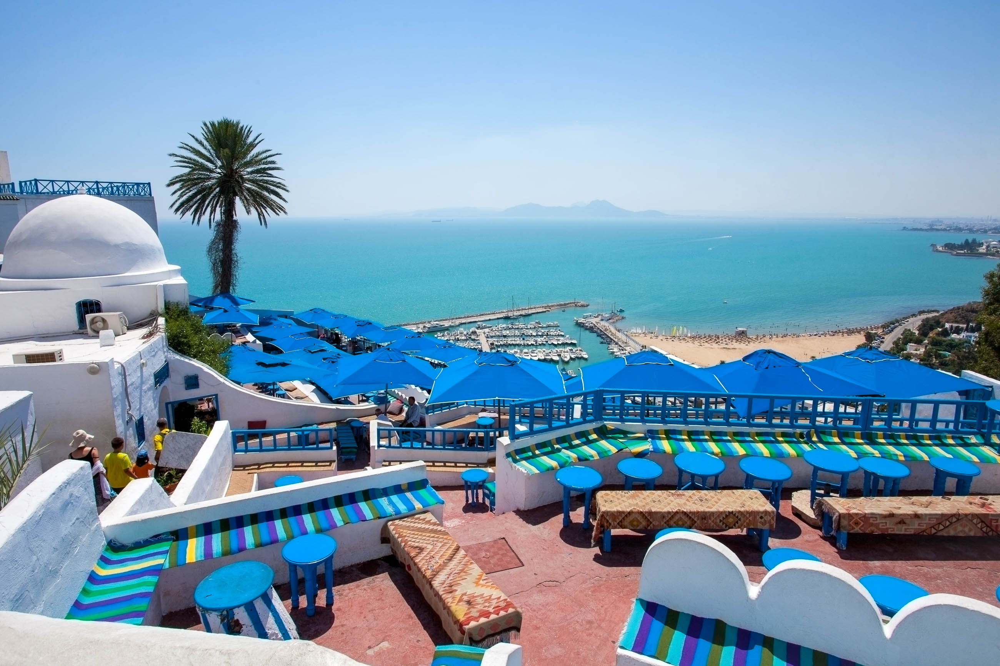
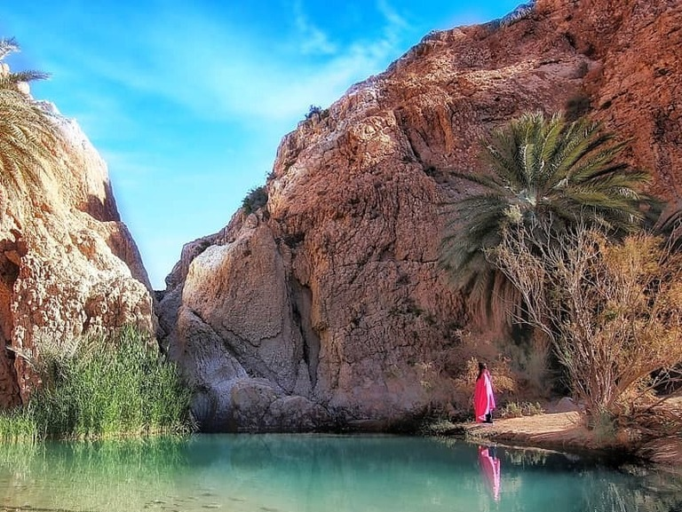
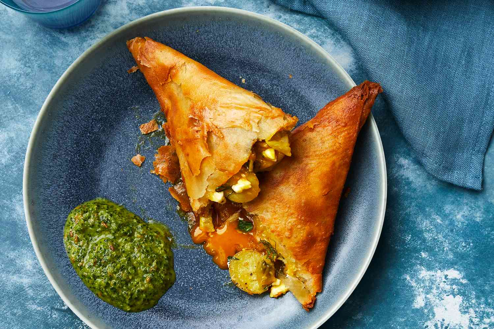
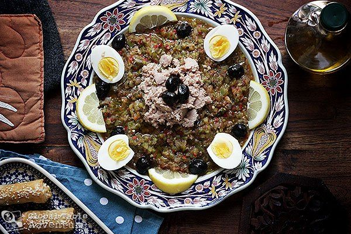
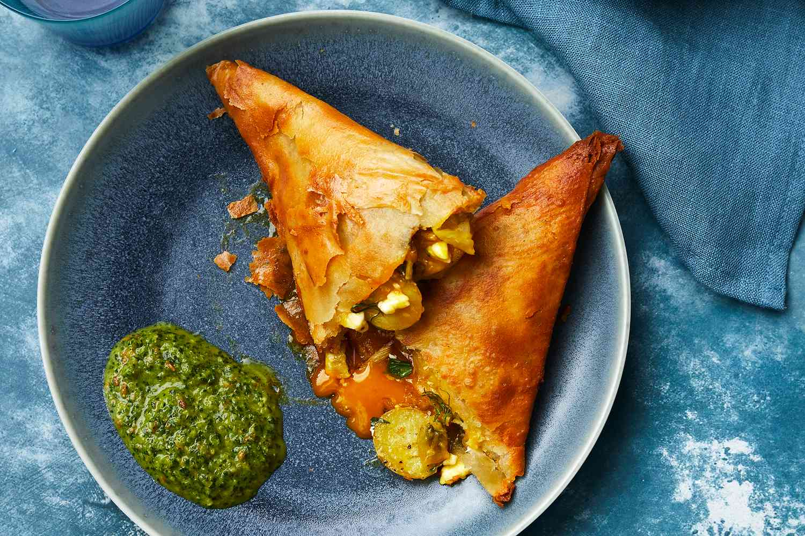
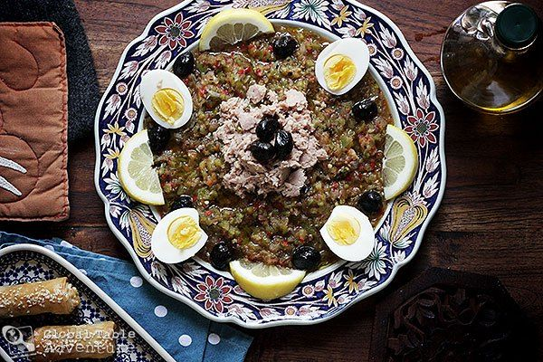

About Tunisia
Tunisia is a country located in North Africa with a rich history and culture. It is known for its beautiful beaches, ancient ruins, and delicious cuisine.
Culture
Tunisian culture is a blend of Arab, Berber, and European influences. It is known for its music, art, and traditional crafts such as pottery and weaving.
Attractions
Carthage
Explore the ancient ruins of the city of Carthage.
Sousse
Relax on the beautiful beaches of Sousse.
Medina of Tunis
Experience the vibrant culture and architecture of the Medina of Tunis.
Sidi bou Said
It is known for its picturesque streets, traditional white and blue houses, and stunning views of the Mediterranean Sea.
Douz
Douz is a small town located in the south of Tunisia, close to the Sahara Desert. It is known for its annual international Sahara Festival, which attracts thousands of visitors to experience traditional Bedouin culture and music, camel races, and other festivities.

Tunisian Cuisine
Tunisian cuisine is known for its bold flavors and diverse ingredients. It is influenced by Mediterranean, Arab, and Berber culinary traditions, resulting in a unique and delicious cuisine.
Signature Dishes
 



- Brik: a crispy pastry filled with egg, tuna, and harissa
- Couscous: a semolina-based dish served with meat and vegetables
- Lablabi: a chickpea stew flavored with garlic and cumin
- Chakchouka: a dish made of eggs, peppers, tomatoes, and onions
- Tagine: a slow-cooked stew typically made with lamb, vegetables, and spices
Ingredients
Tunisian cuisine incorporates a wide range of ingredients, including:
- Harissa: a spicy chili paste made with garlic, coriander, and caraway seeds
- Couscous: a type of semolina that is a staple in Tunisian cuisine
- Lamb: a popular meat in Tunisian dishes
- Fish and seafood: Tunisia's location on the Mediterranean makes seafood a common ingredient
- Olive oil: a key ingredient in many Tunisian dishes
Beverages
In addition to delicious food, Tunisia also has some refreshing beverages to try:
- Boukha: a distilled fig liquor
- Mint tea: a sweet and minty tea that is a staple in Tunisian culture
- Qalb el louz: a sweet almond-flavored drink
- Thibarine: a drink made from dates